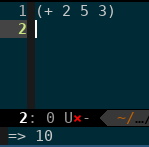
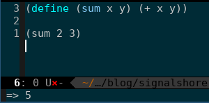
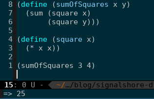

Prologue
I started learning LISP (actually a dialect of LISP called Scheme) sometime back. The inspiration for learning Scheme was that it is a completely new programming paradigm i.e. functional programming language and I wanted to learn a non-Object-Oriented programming language. Anyway, so I looked at Haskell as its a purely functional programming language, but I picked Scheme because of the book Structure and Interpretation of Computer Programs (referred to as SICP hereafter).
What is this ?
Even though I started about 1 year back I did not make much progress and I realized that one of the main reasons was that I was not doing the exercises with enough rigor. Thinking about a solution is very different than writing an actual program. So I decided that I would do the exercises and put them on Gitlab and then write about them. Furthermore during this course of learning Scheme I've come across a lot of cool stuff that completely changed the way how I approached computer science and programming in general. I want to share those.
Lets start
Let us write a program

(these are cropped screen-shots of Emacs)
This program takes three numbers and adds them. This is also how the scheme syntax looks. Scheme syntax is just S-expressions or symbolic expressions.
Thinking about S-expressions is easy. - Starting from the first "(" the first element is the operator - Everything that comes after the first operator are the operands - The end is the closing bracket ")"
How about a procedure (scheme word for functions)
In scheme we use the "define" keyword to define a procedure.
Its syntax is like this (define (<name> <formal parameters) (<body>))
Let us define a procedure

This is how the procedure looks. The name of the procedure is "sum" and it takes in two numbers and produces their sum.
Let us write something a bit complicated

This procedure uses the previous "sum" procedure to compute the sum of the square of two numbers. I this process you should see another procedure that we have defined which is called "square". This is an accessory procedure. We could have no used it and it wouldn't have mattered too much.
NOW!! here is the kicker! :-P
Imagine for a second that you did not know how addition, multiplication, division etc worked. You could still define the procedure "sumOfSquares" knowing that you have procedures called "sum" and "square" that will take care of the internal operations for you.
What this enables you to do is do a top down design approach to things. While designing apps (nothing too big) in C++ I found myself being too worried about what were all the small parts the should make up the program, But after starting to read this book apart from learning scheme I also learned this model of thinking.
The writers call this "wishful thinking"; as in you wish that something existed and then used it as if it existed. Then you tried to figure out if it did exist in the first place or not. If it does exist then fine; otherwise you design one.
Which means that if at any point while designing a software you are un-sure about all sub-modules that will be required to make that module work then you do not start designing the sub-modules and build up from there. Instead you design the current module and then design the sub-modules to match the requirement set up by the module. This is top-down design approach.
For example when designing "sumOfSquares" you need not think about how you will implement it. You can just write the code and then you can sit down and figure out how "sum" and "square" would work. At the time of writing the sumOfSquare you do not know if sum and square exist. You just use them as if they did existed.
This also means that while wiring the sumOfSquare procedure you need not bother about how sum and square will be implemented. You can just use them as it is.
This brings me to my next point.
Abstraction
Every procedure is like a layer of abstraction that is telling you to not worry about how it works and instead focus on the task at hand. This idea is immensely helpful. Its so simple. If you don't know how to do something; just write a procedure that does it; then worry about the procedure later.
I didn't think much about this until recently when I started doing the exercises in the book more seriously. Its great once you get the hang of it.
Conclusion
This is not the I have more things to share. Hopefully I will be able to write about them soon. :-P
Here is the Gitlab Repo where I will keep uploading my SICP exercises.